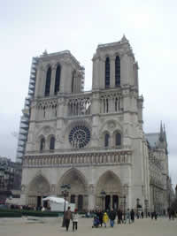

600 JAHRE GESCHICHTE
 Notre-Dame de Paris
Notre-Dame de Paris
600 JAHRE GESCHICHTE
|
|
Herzlich willkommen!
|
Als gebürtige Pariserin und Historikerin mit Leib und
Seele blieb mir für meine persönliche Seite eigentlich gar keine andere
Wahl, als sie unserer wunderschönen Kathedrale zu widmen, die seit
hunderten von Jahren im Herzen der Hauptstadt Frankreichs emporragt. Und weil
Geschichte nicht unbedingt immer mit langweiligen Daten gleichzusetzen
ist, schlage ich vor, dass wir uns diesem Baudenkmal einmal aus einer ganz
anderen Perspektive nähern, nämlich aus derjenigen ihrer Erbauer, der
Alchimisten des Mittelalters und der Filmemacher unserer Zeit.
|
 |
Aber
das ist noch nicht alles!
Für die ganz
Neugierigen unter euch habe ich meine
eigene Geschichte und die von mir bevorzugten Links hinzugefügt! Viel Spaß beim
Entdecken meiner Site und bis bald! Eure Julie